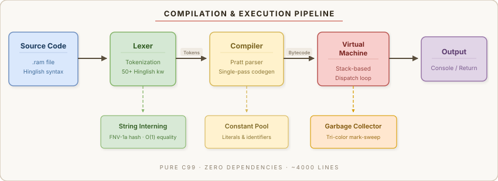

Rampyaaryan
India's First Hinglish Programming Language
Write code in the language you think in. No Python. No Node.js. No dependencies. Just one native binary.
likho "🙏 Namaste Duniya!"
maano naam = poocho("Aapka naam: ")
likho "Swagat hai, " + naam + " ji!"
kaam factorial(n) {
agar n <= 1 { wapas do 1 }
wapas do n * factorial(n - 1)
}
likho format("10! = {}", factorial(10))Features
Pure C (C99)
Compiles to a single native binary. Zero runtime dependencies. Blazing fast.
Hinglish Syntax
Keywords in Hindi-English — maano, likho, agar, kaam. Think in Hindi, code in Hindi.
Bytecode VM
Stack-based virtual machine with 44 opcodes. Pratt parser compiles source to efficient bytecode.
Garbage Collector
Tri-color mark-sweep GC with automatic heap management. No manual memory management.
Closures & First-Class Functions
Full lexical scoping with upvalue capture. Pass functions as arguments.
Dynamic Lists
Built-in arrays with 23 operations: sort, slice, search, statistics, flatten, chunk, rotate.
Dictionaries / Maps
Key-value {key: value} syntax with 9 map functions for data modeling.
Rich String Library
27 string functions: split, join, format, replace, trim, title_case, pad, and more.
Math & Science
37 functions: trigonometry, logarithms, factorial, prime checking, Fibonacci, random ops.
Higher-Order Functions
naksha (map), chhaano (filter), ikkatha (reduce), zip, enumerate, and more.
File I/O
Read, write, append files. Check file existence. Build real applications.
Interactive REPL
Multiline editing, syntax colors, command history, helpful error messages in Hinglish.
Quick Start
# Clone the repository
git clone https://github.com/Rampyaaryans/rampyaaryan.git
cd rampyaaryan
# Build (pick one)
make # GNU Make
gcc -O2 -o rampyaaryan src/*.c -lm # Direct GCC
# Run a program
./rampyaaryan examples/01_namaste_duniya.ram
# Or start the REPL
./rampyaaryanWhat You Can Build
# A mini student database using maps and lists
maano students = []
kaam add_student(naam, marks, city) {
maano s = {"naam": naam, "marks": marks, "city": city}
joodo(students, s)
}
add_student("Arjun", 92, "Delhi")
add_student("Priya", 88, "Mumbai")
add_student("Rahul", 95, "Pune")
# Filter toppers using higher-order functions
kaam is_topper(s) { wapas do s["marks"] >= 90 }
maano toppers = chhaano(students, is_topper)
likho format("Toppers: {}", toppers)Documentation
Getting Started
Installation, building from source, running your first program, REPL commands.
Tutorial
19 lessons from "Namaste Duniya" to closures, maps, bitwise ops, and practical projects.
API Reference
Complete documentation for all 145 built-in functions across 12 categories.
Language Specification
Formal grammar, data types, operator precedence, truthiness rules, runtime architecture.
Examples
20 ready-to-run programs: hello world, sorting, math, databases, pattern matching, and more.
How-To Guide
Complete cookbook: variables, loops, functions, lists, maps, file I/O, string ops, tips & tricks.
Architecture

| Component | Technology |
|---|---|
| Language | Pure C (C99 standard) |
| Parser | Pratt parser (precedence climbing) |
| VM | Stack-based bytecode virtual machine |
| GC | Tri-color mark-sweep garbage collector |
| Hashing | FNV-1a, open-addressing hash table |
| Strings | Interned for O(1) comparison |
Keyword Quick Reference
| Rampyaaryan | English | Usage |
|---|---|---|
maano | let / var | Variable declaration |
likho | Output to console | |
poocho | input | Read from user |
agar | if | Condition |
warna agar | else if | Else-if branch |
warna | else | Else branch |
jab tak | while | While loop |
har | for | For loop |
kaam | function | Function definition |
wapas do | return | Return value |
ruko | break | Break loop |
agla | continue | Skip iteration |
sach | true | Boolean true |
jhooth | false | Boolean false |
khali | null | Null value |
aur | and | Logical AND |
ya | or | Logical OR |
nahi | not | Logical NOT |
145 Built-in Functions at a Glance
Type Conversion & Checking 16
prakar sankhya shabd purn dashmlav bool_val kya_sankhya kya_shabd kya_suchi kya_kaam kya_bool kya_khali kya_purn kya_map typeof_val print_type
Strings 27
lambai bade_akshar chhote_akshar title_case capitalize swapcase kato dhundho badlo todo jodo_shabd saaf center pad_left pad_right shuru_se ant_se dohrao akshar ascii_code ascii_se format gino kya_ank kya_akshar kya_alnum kya_space
Lists 23
joodo nikalo kram ulta suchi range_ shamil index_of katao pahla aakhri milao daalo anokha jod ausat sabse_bada sabse_chhota flatten tukda ghuma copy_suchi khali_karo
Math & Science 37
abs_val gol upar neeche sqrt_val power_val bada chhota sin_val cos_val tan_val log_val PI E gcd lcm factorial kya_prime fib hypot_val random_int and more…
Higher-Order 7
naksha chhaano ikkatha sab koi jodi_banao ginati_banao
Maps / Dicts 9
shabdkosh chabi mulya jodi map_hai map_get map_hatao map_milao map_lambai
Project Structure
rampyaaryan/
├── src/
│ ├── common.h — Common includes & config
│ ├── memory.h/c — Memory allocator & GC
│ ├── value.h/c — Value types (number, bool, null, obj)
│ ├── object.h/c — Heap objects (string, function, list, map)
│ ├── table.h/c — Hash table implementation
│ ├── chunk.h/c — Bytecode chunks
│ ├── lexer.h/c — Tokenizer (Hinglish keywords)
│ ├── compiler.h/c — Pratt parser + bytecode emitter
│ ├── vm.h/c — Virtual Machine
│ ├── native.h/c — Built-in functions (145)
│ ├── debug.h/c — Bytecode disassembler
│ ├── ascii_art.h/c — Terminal animations
│ └── main.c — CLI entry point & REPL
├── examples/ — 20 example .ram programs
├── docs/ — Documentation website
├── Makefile — GNU Make build
├── CMakeLists.txt — CMake build
├── LICENSE — Rampyaaryan License
└── README.md — Project overview